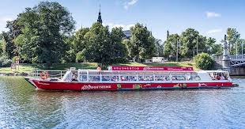

Bootstouren

Klassische Bootstour durch Stockholm
- Für wen geeignet? Erstbesucher
- Tickets: ab 27 Euro
- Dauer: 1 Stunde
- Hier geht’s los: am Pier vor dem Königsschloss
Bootstour durch die Schären
- Für wen geeignet? Naturliebhaber
- Tickets: ab 35 Euro
- Dauer: 1,5-3 Stunden
- Hier geht’s los: Strandvägen in Östermalm an Kaiplatz 14-16
Kajaktour durch Stockholm
- Für wen geeignet? Sportskanonen, Abenteuerlustige
- Tickets: ab 55 Euro
- Dauer: 2 Stunden
- Hier geht’s los: auf Långholmen
Bootstour durch Stockholm und die Schären mit der Fähre
- Für wen geeignet? Erstbesucher, Sparfüchse
- Tickets: im Ticket für die Öffis enthalten. Einzeltickets für 75 Minuten gibt’s für 4 Euro.
- Dauer: individuell
- Hier geht’s los: an einem der Stopps der Fährlinien 80, 82, 83, 84 & 89